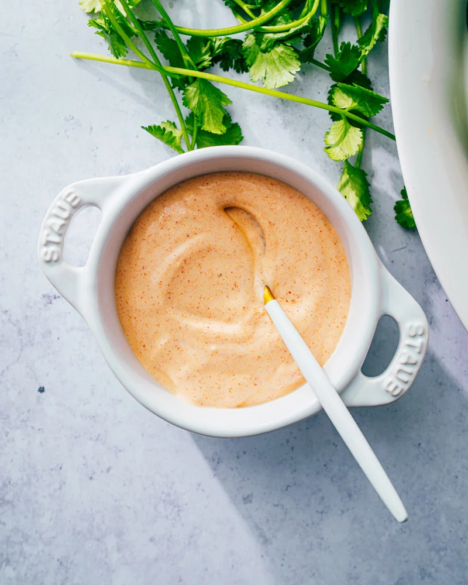

A bowl of chipotle crema sauce
This is a foundation to our Taco Tuesday: the crema sauce. We have been succesful substituting a
homemade cashew crema for those who are avoiding dairy. Fairly simple: get it all in a bowl and mix.
Ingredients
- Sour Cream
- Olive Oil
- Lemon
- Salt
- Pepper
- Chipotle Powder
- Chili Powder
- Garlic Powder
- Onion Powder
Steps
- Dole out sour cream and mix in olive oil and lemon.
- Mix in spices. Stir.
Back Home